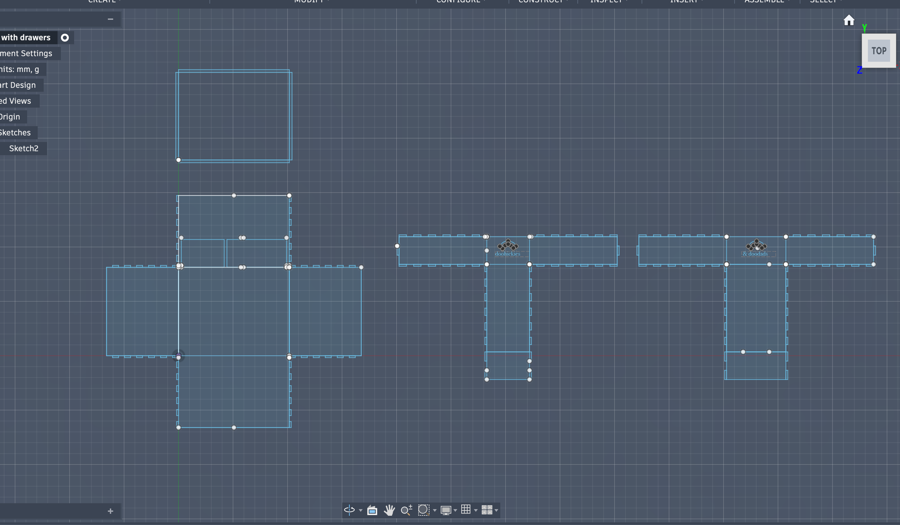

Week 2: 2D/3D Design
You have three assignments: design a cardboard box, work through a Fusion 360 tutorial, and model some household objects or components from the lab. Include some pictures and downloads to your 3D models.
Box Design
I decided to make a box with drawers, just to pretend to be fancy.

And then... even though I had a sucessful Fusion model, I just decided to make a cat box. Because. You know. Cat!
Anyways here he is. His name is Percival, according to Arden.

Fusion 360 Tutorial
I followed a tutorial by Morley Kelly on using Form Mode to create vases. Here's his video, and here's my attempt:.
CAD Practice
I tried to make my perfume bottle and my watch face.